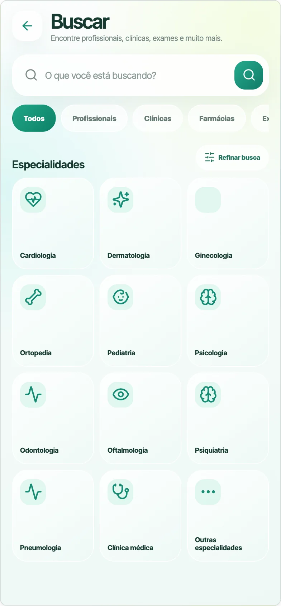
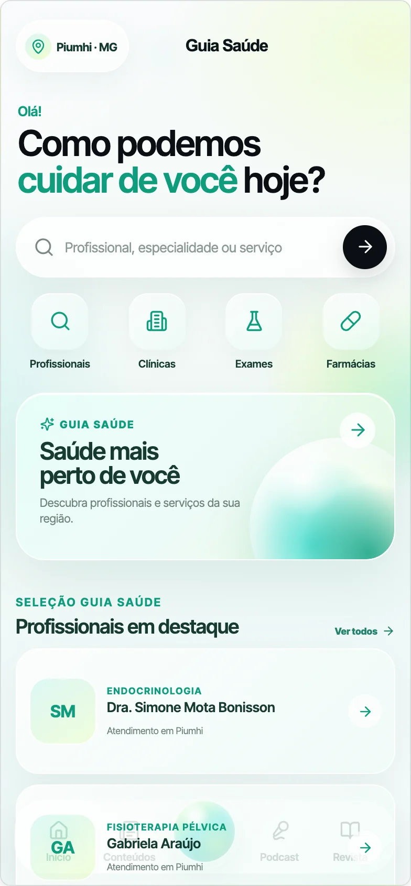

Busca por categoria
Encontre profissionais e serviços por necessidade.
Um diretório local que facilita a busca por profissionais, clínicas e serviços de saúde.


Quando alguém precisa de um profissional ou serviço, a busca costuma começar em vários lugares diferentes e sem contexto suficiente para decidir.
O Guia Saúde reúne profissionais, clínicas, serviços e conteúdos em uma experiência local, organizada e mais fácil de explorar.
Encontre profissionais e serviços por necessidade.
Informações organizadas para quem está perto.
Dados essenciais para conhecer cada opção.
Informação, matérias e novos formatos de conteúdo.